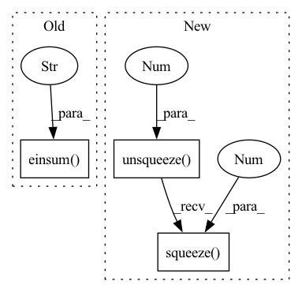

Pattern ID :24067

Before Change
// x: (batch_size, num_route_nodes, in_channels)
// route_weights: (num_route_nodes, num_capsules, in_channels, out_channels)
// u_hat: (batch_size, num_capsules, num_route_nodes, out_channels)
u_hat = torch.einsum("ijk, jlkm -> iljm", x, self.route_weights)
// Detatch u_hat during routing iterations
u_hat_temp = u_hat.detach()
// Dynamic route
After Change
def forward(self, x):
batch_size = x.size(0)
// (batch_size, in_caps, in_dim) -> (batch_size, 1, in_caps, in_dim, 1)
x = x.unsqueeze(1).unsqueeze(4)
//
// W @ x =
// (1, num_caps, in_caps, dim_caps, in_dim) @ (batch_size, 1, in_caps, in_dim, 1) =
// (batch_size, num_caps, in_caps, dim_caps, 1)
u_hat = torch.matmul(self.W, x)
// (batch_size, num_caps, in_caps, dim_caps)
u_hat = u_hat.squeeze(-1)
// detach u_hat during routing iterations to prevent gradients from flowing
temp_u_hat = u_hat.detach()
b = torch.zeros(batch_size, self.num_caps, self.in_caps, 1).to(self.device)
In pattern: SUPERPATTERN
Frequency: 3
Non-data size: 3
Instances
Fragment ID: 74720391
Project Name: riroaki/capsnet
Commit Name: e62f83faad1731befd8a1e434aaf902e2140aecb
Time: 2020-03-08
Author: aki@akideMacBook-Pro.local
File Name: capsnet.py
M Class Name: DigitCaps
N Class Name: DigitCaps
M Method Name: forward(2)
N Method Name: forward(2)
M Parent Class: nn.Module
N Parent Class: nn.Module
M File Name: capsnet.py
N File Name: capsnet.py
M Start Line: 50
M End Line: 79
N Start Line: 59
N End Line: 93
'>
Before Change
xy, z = torch.split(points, [2, 1], dim=-1)
c, s = torch.cos(theta), torch.sin(theta)
R = torch.stack((c, -s, s, c), dim=-1).view(1, -1, 2, 2)
xy = torch.einsum("ijkl,imjl->imjk", R, xy)
xyz = torch.cat((xy, z), dim=-1)
return xyz
def sample_gridpoints(self, proposals):
After Change
xy, z = torch.split(points, [2, 1], dim=-1)
c, s = torch.cos(theta), torch.sin(theta)
R = torch.stack((c, -s, s, c), dim=-1).view(b, n, m, 2, 2)
xy = torch.matmul(R, xy.unsqueeze(-1))
xyz = torch.cat((xy.squeeze(-1), z), dim=-1)
return xyz
def sample_gridpoints(self, proposals):
'>
Fragment ID: 74720392
Project Name: jhultman/vision3d
Commit Name: 1a652d6cae90ba6dca963f3725b0cb1b9049e39c
Time: 2020-02-12
Author: 27909223+jhultman@users.noreply.github.com
File Name: pvrcnn/roi_grid_pool.py
M Class Name: RoiGridPool
N Class Name: RoiGridPool
M Method Name: rotate_z(3)
N Method Name: rotate_z(3)
M Parent Class: nn.Module
N Parent Class: nn.Module
M File Name: pvrcnn/roi_grid_pool.py
N File Name: pvrcnn/roi_grid_pool.py
M Start Line: 41
M End Line: 43
N Start Line: 39
N End Line: 45
'>
Before Change
"""
//(adj @ x.unsqueeze(-1)).squeeze(-1)
return self.conv(torch.einsum("ncaf,ncf->nca", adj, x)).view(x.size(0), self.out_channels, self.out_features)
def feature_adjacency(self, x, y):
fadj = torch.stack([torch.einsum("ca,ncb->cab", x[i], y[i]) for i in range(x.size(0))])
After Change
mm(N,c,f,f @ N,c,f,1)->(N,c_in,f,1); view->(N,c_in,f)
W: (c_out*f_out,f)
"""
return self.conv((adj @ x.unsqueeze(-1)).squeeze(-1)).view(x.size(0), self.out_channels, self.out_features)
def feature_adjacency(self, x, y):
fadj = torch.stack([torch.einsum("ca,ncb->cab", x[i], y[i]) for i in range(x.size(0))])
'>
Fragment ID: 74720395
Project Name: wang-chen/lgl
Commit Name: 13415e8d67e9df7f1f9a17e591aa3d8cbf6b9ceb
Time: 2021-02-04
Author: yuhengq@andrew.cmu.edu
File Name: models/layer.py
M Class Name: FeatTrans1d
N Class Name: FeatTrans1d
M Method Name: transform(3)
N Method Name: transform(3)
M Parent Class: nn.Module
N Parent Class: nn.Module
M File Name: models/layer.py
N File Name: models/layer.py
M Start Line: 90
M End Line: 90
N Start Line: 88
N End Line: 88